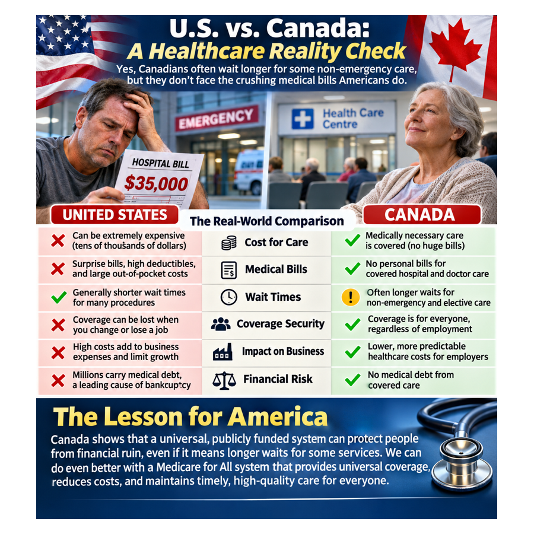
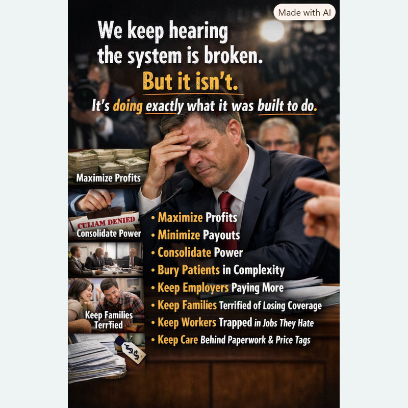
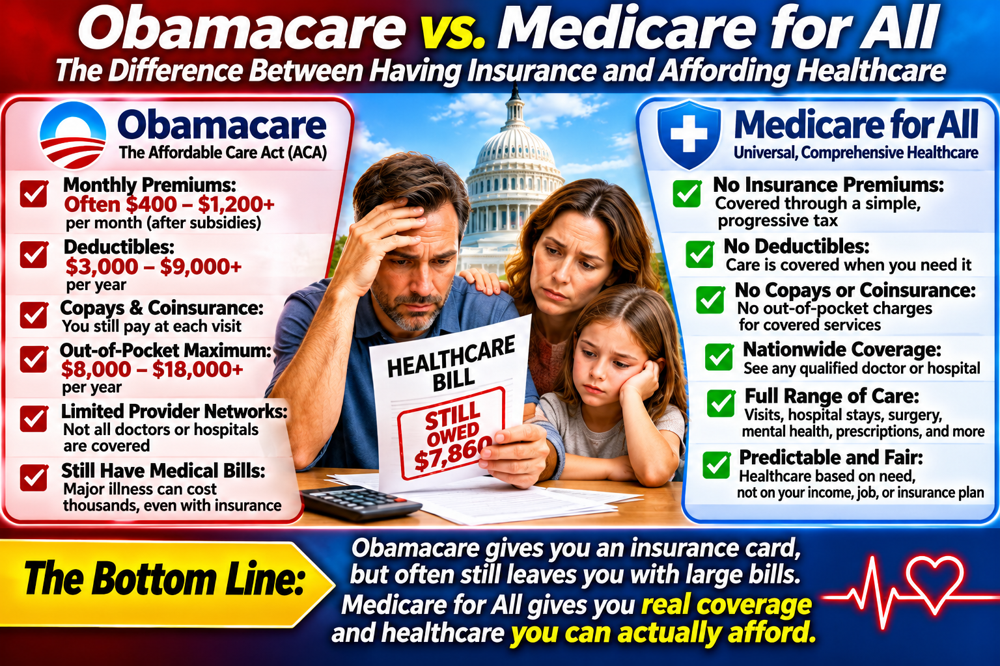

All Articles
Every published article is listed here, newest first. Select a picture or title to read the full article.
16 — When Medical Bills Cost You Your Home
How medical debt, lost income, and unaffordable healthcare can put families at risk of eviction, foreclosure, and homelessness.
Read article →15 — If America Is the Greatest Country, Let’s Prove It
Let’s build a healthcare system worthy of America’s ideals—one that puts We the People first and leaves no one last.
Read article →14 — When Denying Care Becomes a Business Strategy
Congressional scrutiny of insurance claim denials, corporate incentives, and the consequences for patients.
Read article →13 — Do We Really Want a Healthcare System That Profits from Sickness?
Who benefits from healthcare's financial incentives—and how could Medicare for All better align payment with patient health?
Read article →
12 — U.S. vs. Canada: A Healthcare Reality Check
Canada faces waits for some services, while U.S. patients can face substantial medical bills. What can Americans learn from both systems?
Read article →11 — Why Business Leaders Should Be Enthusiastic About Medicare for All
How Medicare for All could help employers through more predictable costs, simpler administration, worker mobility, and global competitiveness—while weighing financing trade-offs.
Read article →10 — We Don’t Need to Rob the Rich to Help the Poor
How fixing healthcare’s costly systems could benefit businesses and working families without turning economic classes against one another.
Read article →
9 — The Healthcare System Isn’t Broken — It’s Doing What It Was Built to Do
A look at how healthcare financing incentives, insurance complexity, and employer-based coverage can conflict with patient needs—and what reform could change.
Read article →8 — Medicare for All: A Bipartisan Opportunity
How universal healthcare could help families at every income level and improve business competitiveness—and the trade-offs a credible proposal must address.
Read article →7 — Better Healthcare Could Cost Less Than We Spend Today
Studies suggest Medicare for All could provide universal coverage while reducing overall healthcare spending; savings depend on policy design.
Read article →6 — Healthcare Needs Solutions, Not Stonewalling
An opinion calling for concrete healthcare solutions instead of misinformation and political stonewalling.
Read article →5 — Socialism as a Political Weapon
Why public policies should be evaluated on their merits, not dismissed with political labels.
Read article →4 — A Festering Wound: The History of Medicare for All and Congress’s Failure to Act
A century of national health insurance debates, landmark reforms, and stalled Medicare for All proposals—and the human cost of leaving America’s healthcare problems unresolved.
Read article →
3 — Obamacare vs. Medicare for All: The Difference Between Having Insurance and Affording Healthcare
Obamacare expanded access to insurance, but premiums, deductibles and copays can still make care unaffordable. Compare what patients pay under ACA plans with a proposed Medicare for All system.
Read article →
2 — Can America Afford Medicare for All—or Can We Afford to Keep the System We Have?
An evidence-based look at U.S. healthcare spending, insurance costs, administrative waste, and the potential trade-offs of Medicare for All. Savings depend on the specific plan and assumptions.
Read article →
1 — Medicare for All: How Would Hospital Billing Actually Work?
How would Medicare for All pay hospitals? Explore simplified national billing, hospital global budgets, patient care, staffing, and financial accountability.
Read article →There is no THEM. There is only US.
Healthcare affects families, employers, clinicians, and communities. We explore practical, fair, financially sustainable approaches to universal care.